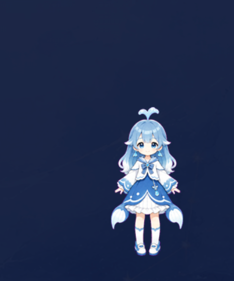

贴图 → 原生附件入库（缩略图保留） → 序列化层把图片块转成本地路径文本（仅模型侧）
→ 模型调用 view_image / dsh-ocr / modlens_read_image → 文字证据 → 回答
| 环节 | 结果 | 证据 |
|---|---|---|
| 贴图准入（inputModalities 声明） | ✅ accepted:true | API 实测 session.prompt 返回 ok |
| 聊天保留整张图 | ✅ image,text 块共存于会话日志 | durable log 校验 |
| 序列化层转换 | ✅ 图片块 → 本地路径文本（wire-only） | 行为测试 3 场景 PASS |
| 无扩展名附件读图 | ✅ magic-byte 嗅探 | data:image/png 命中，非图片仍拒 |
| 429 回退链 | ✅ qwen-vl-plus 仅失败计费 | 配置 + 代码审查 |

view_image（qwen3-vl-flash，普通档）： 主色调是深蓝色，辅以浅蓝与白色。 view_image（高精度档 qwen-vl-plus）： 发色浅蓝带渐变、白蓝连衣裙蝴蝶结、 白长筒袜蓝鞋、蓝色扇形尾巴、深蓝纯色背景…… （细节描述显著更丰富） modlens（gemini-flash-latest）： A full-body illustration of a chibi anime-style girl with light blue hair and an ocean/whale-themed outfit, set against a solid dark navy blue background. vision.py（qwen 直连兜底）： 一位蓝发蓝衣的可爱少女，站在深蓝色背景前……
| 项 | 结果 |
|---|---|
| 并发读图（同图双问并行） | ✅ isConcurrencySafe，双调用同时成功 |
| 同图同问缓存（LRU，按 size+mtime 失效） | ✅ 重复问答一致 |
| 大图自动压缩（>2MB，长边 1600px） | ✅ 实测 3.3MB → 1.4MB 上传 |
| 故障转移（gemini 临时不可用时） | ✅ 实测自动切换 openai，无感 |
| 密钥存储（.env / config.json 0600，patch 无内联密钥） | ✅ 已修补 |
| 仓库/日志密钥扫描 | ✅ 零泄露 |